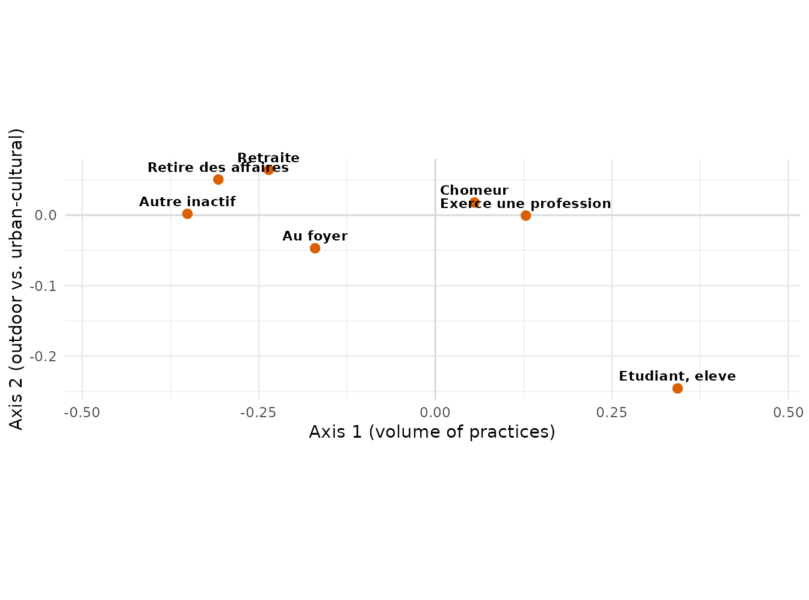
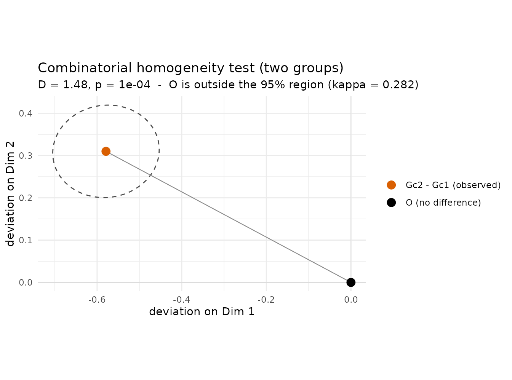

The question
A Geometric Data Analysis lays out groups as mean points in a cloud, and it is tempting to read every gap between two of them as a real contrast. But a gap can be due to sampling randomness rather than genuine differences. The combinatorial homogeneity test of Le Roux, Bienaise & Durand (2019, ch. 5) asks:
Are the two groups heterogeneous?
It is a permutation test: keeping the group sizes fixed, it reallocates the individuals to the groups in all possible ways (or many random ways) and asks how often the reshuffled groups end up as far apart as the observed ones.
This is a different question from the one answered by the
typicality test (see
vignette("typicality")). Typicality compares one group
with the whole cloud (“are the students unusual?”). Homogeneity
compares two groups with each other (“do the students and the
retired differ?”). Two groups can both be atypical of the main cloud yet
be similar compared to one another.
For two groups the test reports:
- the Mahalanobis distance
Dbetween the two mean points (andD²); - a proportion of variance
η²– the share of the cloud’s variance that the split accounts for, the descriptive effect size (the book calls a difference notable whenη² ≥ 0.04); - a combinatorial p-value;
- a compatibility region for the deviation between the means.
The cloud
We reuse the MCA of the vignette("typicality"): 2000
respondents of the French “Histoire de vie” survey
(questionr::hdv2003) and seven leisure practices, with
sexe and occup (activity status) as
supplementary variables.
library(GDAinference)
library(FactoMineR)
library(ggplot2)
data("hdv2003", package = "questionr")
active <- c("hard.rock", "lecture.bd", "peche.chasse",
"cuisine", "bricol", "cinema", "sport")
d <- hdv2003[, c(active, "sexe", "occup", "age")]
mca <- MCA(d, quali.sup = 8:9, quanti.sup = 10, ncp = Inf, graph = FALSE)On the first plane, axis 1 is the volume of practices (few on the left, many on the right; older respondents on the left) and axis 2 opposes outdoor/manual leisure (top) to urban-cultural leisure (bottom). The mean point of each activity-status group – the barycentre of its individuals, which is what the test works on – sits as follows:
co <- get_coord(mca)[, 1:2]
occ <- mca$call$X$occup
bary <- aggregate(co, list(occup = occ), mean)
names(bary)[2:3] <- c("D1", "D2")
ggplot(bary, aes(D1, D2, label = occup)) +
geom_hline(yintercept = 0, colour = "grey85") +
geom_vline(xintercept = 0, colour = "grey85") +
geom_point(colour = "#D95F02", size = 2.4) +
geom_text(size = 3, fontface = "bold", vjust = -0.8) +
scale_x_continuous(expand = expansion(mult = 0.25)) +
coord_equal(clip = "off") + theme_minimal() +
labs(x = "Axis 1 (volume of practices)",
y = "Axis 2 (outdoor vs. urban-cultural)")
The students sit far in the “young / many / urban-cultural” corner and the retired on the opposite side; the employed and the unemployed crowd near the centre. Let us turn these impressions into tests.
Do two groups differ? Students vs the retired
sr <- homogeneity(mca, group = "occup",
groups = c("Etudiant, eleve", "Retraite"),
axes = 1:2, seed = 1, max_samples = 1e4)
sr
#>
#> Combinatorial homogeneity test (two groups)
#> -------------------------------------------
#> Cloud : n = 2000 points, dimensionality L = 2
#> Comparison : partial -- "Etudiant, eleve" (n1 = 94) vs "Retraite" (n2 = 392), others pooled (n_r = 1514)
#>
#> Proportion of variance (eta^2) = 0.04462 -- notable difference
#> Mahalanobis distance D = 1.484 (D^2 = 2.203) between the mean points
#> Distribution : Monte Carlo, 10,000 arrangements
#> p-value : (0 + 1) / (10,000 + 1) = 9.999e-05 (add-one corrected)
#> 95% compatibility : principal kappa-ellipsoid, kappa = 0.2816The mean points are far apart (D ≈ 1.48), the split is
notable (η² ≈ 0.045 ≥ 0.04) and
no reshuffle out of 10,000 separates the two groups as
much – p ≈ 0. Students and the retired are heterogeneous.
The plot() shows the inference directly, in the
space of deviations:
plot(sr)
The orange point is the observed deviation
(retired minus students); it runs along axis 1, the
volume of practices. The dashed 95% compatibility
region around it is the set of deviations compatible with the
data. The null point O = “no difference” lies far
outside it – the geometric face of p < 0.05. Note how
small the region is: with hundreds of individuals the deviation
is pinned down tightly, so the difference is certified with ease.
Significance and size of differences
The homogeneity test, like the typicality test, separates statistical significance from the size of a difference. Compare three pairs of groups:
pairs <- list(c("Exerce une profession", "Chomeur"),
c("Au foyer", "Retraite"),
c("Etudiant, eleve", "Retraite"))
do.call(rbind, lapply(pairs, function(p) {
r <- homogeneity(mca, "occup", groups = p, axes = 1:2, seed = 1, max_samples = 1e4)
data.frame(comparison = paste(p, collapse = " vs "),
D = round(r$statistic, 2),
eta2 = round(r$pv, 3),
p_value = round(r$p_value, 4),
notable = r$notable)
}))
#> comparison D eta2 p_value notable
#> 1 Exerce une profession vs Chomeur 0.16 0.001 0.1962 FALSE
#> 2 Au foyer vs Retraite 0.32 0.003 0.0024 FALSE
#> 3 Etudiant, eleve vs Retraite 1.48 0.045 0.0001 TRUEThree contrasting situations, the whole point of the method:
-
Employed vs unemployed –
p ≈ 0.20,η² ≈ 0.001. The two big central groups are compatible: their gap is small and could easily be due to the randomness of the sampling. On this plane they look alike. (Geometrically, O falls inside the compatibility region.) -
Homemakers vs the retired –
p ≈ 0.002butη² ≈ 0.003. The difference is significant yet not notable: with several hundred individuals the test detects a real but minute displacement (two groups that both sit on the low-volume left, barely apart). A small p-value is not equivalent to an important difference. - Students vs the retired – both notable and significant: a genuine, large heterogeneity.
Partial or specific?
There are two ways to compare two groups (Le Roux et al. 2019, §5.3), and they answer subtly different questions. So far we used the default, partial: the two groups are situated within the whole cloud (the other respondents are kept as a residual group and the Mahalanobis metric is the cloud’s). Alternatively, the specific comparison restricts the cloud to the two groups alone:
homogeneity(mca, "occup", groups = c("Etudiant, eleve", "Retraite"),
axes = 1:2, comparison = "specific", seed = 1, max_samples = 1e4)
#>
#> Combinatorial homogeneity test (two groups)
#> -------------------------------------------
#> Cloud : n = 486 points, dimensionality L = 2
#> Comparison : specific -- "Etudiant, eleve" (n1 = 94) vs "Retraite" (n2 = 392)
#>
#> Proportion of variance (eta^2) = 0.1936 -- notable difference
#> Mahalanobis distance D = 1.527 (D^2 = 2.332) between the mean points
#> Distribution : Monte Carlo, 10,000 arrangements
#> p-value : (0 + 1) / (10,000 + 1) = 9.999e-05 (add-one corrected)
#> 95% compatibility : principal kappa-ellipsoid, kappa = 0.2834The conclusion is unchanged (p ≈ 0), but the effect size
jumps from η² ≈ 0.045 to ≈ 0.19. The reason is
instructive: partial η² is the share of the
whole cloud’s variance explained by the split – and
students plus retired are only a quarter of the 2000 respondents, so
they can be far apart (large D) yet account for little of
the total variance. Specific η² is the share
within the sub-cloud of the two groups, where the same
split explains nearly a fifth of the variance. Use partial to
weigh a contrast against the whole analysis, specific to
describe the two groups on their own terms.
When the two groups are the only groups in
group, the comparison is the “specific” one of Theorem 5.1,
and the test then coincides exactly with the combinatorial typicality
test of one group against their union.
A difference of a different kind: men and women
The direction of a difference matters as much as its size. Omitting
groups compares all the categories of the variable; for
sexe that is simply men vs women:
homogeneity(mca, group = "sexe", axes = 1:2, seed = 1, max_samples = 1e4)
#>
#> Combinatorial homogeneity test (two groups)
#> -------------------------------------------
#> Cloud : n = 2000 points, dimensionality L = 2
#> Comparison : global -- "Homme" (n1 = 899) vs "Femme" (n2 = 1101)
#>
#> Proportion of variance (eta^2) = 0.03097 -- small (< notable limit 0.04)
#> Mahalanobis distance D = 0.5391 (D^2 = 0.2906) between the mean points
#> Distribution : Monte Carlo, 10,000 arrangements
#> p-value : (0 + 1) / (10,000 + 1) = 9.999e-05 (add-one corrected)
#> 95% compatibility : principal kappa-ellipsoid, kappa = 0.1102Here p ≈ 0 but η² ≈ 0.03 (significant, not
notable): a small but real gap. Crucially it lies along axis
2, not axis 1 – men lean toward outdoor/manual leisure
(peche.chasse, bricol), women toward
urban-cultural practices. Men and women do similar amounts
(axis 1) of different kinds (axis 2) of leisure. The occupation
contrasts above, by contrast, were differences of volume along
axis 1. Homogeneity tells you not just whether two groups
differ, but in which direction.
All groups at once: the omnibus
To ask whether the activity-status groups are heterogeneous as a
whole, omit groups so that all seven categories are
compared. With more than two groups the statistic is the between-group
Mahalanobis variance V_M (an omnibus test; there is no
single deviation, hence no region):
homogeneity(mca, group = "occup", axes = 1:2, seed = 1, max_samples = 1e4)
#>
#> Combinatorial homogeneity test (7 groups)
#> -----------------------------------------
#> Cloud : n = 2000 points, dimensionality L = 2
#> Comparison : global -- 7 groups: "Exerce une profession" (1049), "Chomeur" (134), "Etudiant, eleve" (94), "Retraite" (392), "Retire des affaires" (77), "Au foyer" (171), "Autre inactif" (83)
#>
#> Proportion of variance (eta^2) = 0.1104 -- notable difference
#> Between-group M-variance V_M = 0.1976
#> Distribution : Monte Carlo, 10,000 arrangements
#> p-value : (0 + 1) / (10,000 + 1) = 9.999e-05 (add-one corrected)η² ≈ 0.11 of the cloud’s variance lies between the
activity-status groups, and p ≈ 0: the groups are strongly
heterogeneous overall. This is the homogeneity counterpart of an omnibus
“are these groups different?” before drilling into the specific pairwise
contrasts above.
Typicality or homogeneity?
The two tests of the package answer neighbouring but distinct questions, and the cloud reading tells you which you need:
- [typicality_comb()] – one group vs the whole cloud. “Are
the students atypical of the respondents?”
(
vignette("typicality")). -
homogeneity()– group vs group. “Do the students and the retired differ from each other?”, or “are the activity-status groups heterogeneous?”
They can disagree in illuminating ways: two groups may both be atypical of the cloud yet not heterogeneous from each other, or both be typical yet still differ; and a single large group can be significantly atypical while its difference from a neighbour is negligible.
Practical notes
-
Exact vs. Monte Carlo. When the number of
reshuffles is small the test is exact; on a cloud of 2000 it draws
max_samplesof them (default1e5; setseedfor reproducibility). To keep this vignette quick we capped them atmax_samples = 1e4; with such tiny p-values, drawing more only sharpens an already-clear conclusion. -
Which axes? The test runs in the subspace you pass
through
axes. We read it on the first plane because that is what we interpreted; passaxes = NULL(withncp = Infin the MCA) to test in the full cloud. - One dimension. On a single axis the test becomes a signed, one-sided comparison of the two group means, with an exact compatibility interval – useful to test a contrast on one interpreted axis. The direction is taken from the observed difference, so for a non-directional claim compare the one-sided p-value to (this matches the interval, which excludes zero exactly when ).
-
Other GDA packages. The same calls work on a
GDAtools
speMCA/csMCAor an ade4dudi.pca/dudi.acm; pass that object, and the grouping variable as a vector when it is not stored in the object.